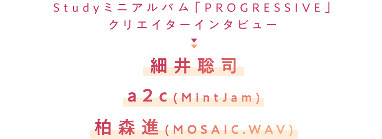

 Studyミニアルバム「PROGRESSIVE」発売記念 クリエイターインタビュー 細井聡司 a2c(MintJam) 柏森進(MOSAIC.WAV)">
7月24日にいよいよリリースされるStudyのミニ・アルバム『PROGRESSIVE』。
本作はデビュー楽曲「ready STUDY go!」を含めて、
2000年代からPCゲーム・シーンで活躍するクリエイターたちを招聘して作られた、
懐かしさも感じられつつも新しいサウンドが散りばめられている。
そこで今回より3回に渡り、『PROGRESSIVE』参加クリエイターから、
細井聡司、a2c（MintJam）、柏森 進（MOSAIC.WAV）の3名を迎えて話を聞いた。
第一回となる今回は、彼らがブレイクを果たした2000年代のゲーム音楽シーンの話から、
『PROGRESSIVE』を手がけるまでを語ってもらった。
- Studyのミニ・アルバム『PROGRESSIVE』が、いよいよリリース目前となりました。本作のキャッチコピーには、「2000年代を彩った、美少女PCゲーム音楽のレジェンドクリエイターが降臨！」と書かれていますが、今回はそんなクリエイターのみなさまにお越しいただきました！
-
細井聡司
むしろ、自分は美少女ゲームのクリエイターだったんだって（笑）。光栄ですけどね。
- みなさんほぼ初対面ということですが、当時からクリエイター同士の交流はあまりないほうなんですか？
-
a2c
(MintJam)みなさん名前は存じ上げているんですけど、同人音楽というフィールドですと、何か一緒に作ったりという機会がない限りはあまり交流がないですね。あとはうちに関してはわりと交流が得意じゃないほうなので（笑）。
-
細井
ほかの業種に比べてサウンド・クリエイターはまだ交流があるほうではないかなと思うんですけど、とはいってもそんなに頻繁に会ったりはしないですね。イベントでご一緒したり、配信番組でゲストに出させていただいたりとかはありますけれども。
-
柏森進
(MOSAIC.WAV)電波ソングでコンピレーションCDを作ったりする方もいるんですけど、MOSAIC.WAVの場合は自己で完結しちゃうのがほとんどなので、たしかに交流というと、昔は本当になかったですね。どちらかというとネットで曲を聴いて、「ああ、こういう曲作ってるんだ。いい曲だなあ……悔しいなあ」と言っているほうでした（笑）。
- 主に2000年代から活動されているみなさんですが、細井さんは90年代からゲーム音楽を中心に活躍されていて、MintJamとMOSAIC.WAVは2003年結成になります。
-
柏森
ave;newさん（ゲーム・シーンを中心に活躍するサウンド・チーム）も2003年ですね。KOTOKOさんはいつ頃ですか？
- KOTOKOさんは2004年にメジャー・デビューですね。「さくらんぼキッス～爆発だも～ん～」は2003年発表です。
-
柏森
なるほど、電波ソング的に2003年は大きい年ですね。
-
細井
僕は仕事を始めてしばらくはPCゲームよりもアーケードゲームのほうで仕事をしていて、PCゲームの仕事をするようになったのは2000年に入ってからなんですよね。最初は音楽ユニットを作って、それが解散して、ソロで自分で新しい屋号を作ってCDを出したのが2003年です。なので、僕にとっても2003年って節目の年なんですよね。
- アニソンが現在の盛り上がりを見せるきっかけが2005～6年ぐらいとよく言われますが、ゲーム音楽も2000年代に入って独自のシーンを形成していたんですよね。
-
a2c
おそらく、アマチュアで音源を自己完結できるようになって、ある程度クォリティーが保てるようになったのがそのくらいの時期なのかなって思います。僕個人で言えば、2000年頃からギター・プレイヤー兼コンポーザーという感じで活動していて、それを自己完結してネットで配信できるサービスが当時から始まったんですね。僕はそのときfripSideの八木沼（悟志）さんとそのサイトを通じて知り合って、声をかけていただいて彼の曲でギターを弾くようになって、20年近い付き合いになります。そういうアマチュア作家が投稿できる「muzie」というサイトで……。
-
細井
おお……懐かしい！（笑）。
-
柏森
MOSAICも投稿していました（笑）。
-
a2c
そういうところから有名になったクリエイターさんがそこにはたくさんいて、少し時間が経ってメジャー・デビューとかしていった時期が2004～5年ぐらいなんじゃないかなと記憶しています。
- 楽曲投稿というと「ニコニコ動画」や「YouTube」がありますが、それ以前にそうしたアマチュアが投稿するサイトがあり、そこから多くのアーティストがメジャーにフックアップされていくケースはそのときからあったんですよね。
-
a2c
当時は霜月はるかさんや志方あきこさんがすごい再生数で、常にランキング上位にいたんですよ。
-
柏森
うちは最初は自社のサイトにmp3を乗っけて聴いてもらうところからスタートして、それと平行して多くのインディーズ音楽ファンが集まる場所であったmuzieに投稿したという経緯です。
- そうした2000年代から活躍されているみなさんですが、今回『PROGRESSIVE』で楽曲を制作するにあたって、アニプレックスからはどんなオファーが届いたんですか？
-
細井
やっぱりそれぞれ違うんですかね。
-
安谷屋光生
(アニプレックス)みなさんに送った発注の内容は違いますね。もちろん参考にしたリファレンスも含めて。
- まず細井さんでいうと、アニプレックスとは2010年にTVアニメ『俺の妹がこんなに可愛いわけがない』で一度楽曲を提供していますよね（第1話EDテーマ「妹プリ～ズ！」）。
-
細井
そうですね。そのとき一度やらせていただいた件もあって、名前を覚えてもらっていました。今回曲を書くにあたって、「2000年代から活躍されていたクリエイターを呼んで今の世の中に提示したい」っていうざっくりとしたメールをいただきました。そのとき僕のなかでは、当時やっていたような音楽を再現する形なのかなって思ったんですけど、プロデューサーの山内さんと話をしていくなかで「懐古趣味なことがやりたいわけではない」って言っていただいて。要は2000 年代に活躍した人たちに発注はするんだけど、今やれること、今やりたいことを前面に出してほしいという話だったんです。それで当初思っていたイメージとはだいぶ変わりまして、今の自分を出していいんだと。名前的には懐かしい人とは思われるかもしれないですけれど、活動は続けていますし、当時やっていたことと今やっていることに違いもある。それもあって、当時PCゲームで遊んでくれた人たちに、今の進化したかたちを聴かせられたらなって気持ちを込めて作りました。
- なるほど。a2cさんはいかがでしたか？
-
a2c
今回曲を書く前に、概要書をアニプレックスさんからいただいたのが最初です。もともと安谷屋さんがMintJamを聴いてくださったところからオファーをいただいたようで。その、いただいた概要書がちょっとすごくて……これ、読んでいいですか？
-
安谷屋
はい（笑）。
-
a2c
「すべてが［x］が見える、どうにも立ちいかなくなり、とことん自分を追い詰め、結果精神的ゲシュタルト崩壊をし、次に脳内麻薬が溢れてハイになった状態、中二的全能感、曲調的に無駄にかっこいい」……（笑）。
-
細井
あはははは！（笑）
-
安谷屋
みなさんへの発注内容は音楽プロデューサーの山内と、皆様がいままで手がけられた楽曲を聴きながら考えました。今見るとたしかにMintJamさんへの発注内容おかしいですね。（笑）
-
柏森
僕の場合そんなに具体的だったかな（笑）。僕の場合は発注書にタイトルも含めて考えていただいた気がします。
- しかしすごい発注内容ですね（笑）。それを見てa2cさんはどう思いましたか？
-
a2c
結構カオスなワードが散りばめられていたので、「あ、結構ゴリゴリで行っていいんだな」って（笑）。それもあって当初、イントロ導入部分がBABY METALばりにギンギンに攻めたものを作ってお渡ししたんですけど、女の子3人でパフォーマンスするのでそれこそBABY METALみたいになっちゃうと（笑）。なので爽やかなクリーンなエレキギターのカッティングや、ストリングスを入れてポップに綺麗にまとめて、結果メリハリのある展開になりました。
- 柏森さんはいかがでしたか？
-
柏森
僕はMOSAIC.WAVの「ふぃぎゅ＠メイト」を聴いてオファーをしていただいたみたいなんですね。なのでいくつか作ったデモのなかには「ふぃぎゅ＠メイト」のような曲も入れたんですけど、最終的にそちらじゃない方を選んでいただいて。やっぱりそこでも「今やりたい曲」というのを提示してほしいということでして、みなさんにも同じようなオファーがあったということを細井さんのお話を聞いて今わかりました（笑）。